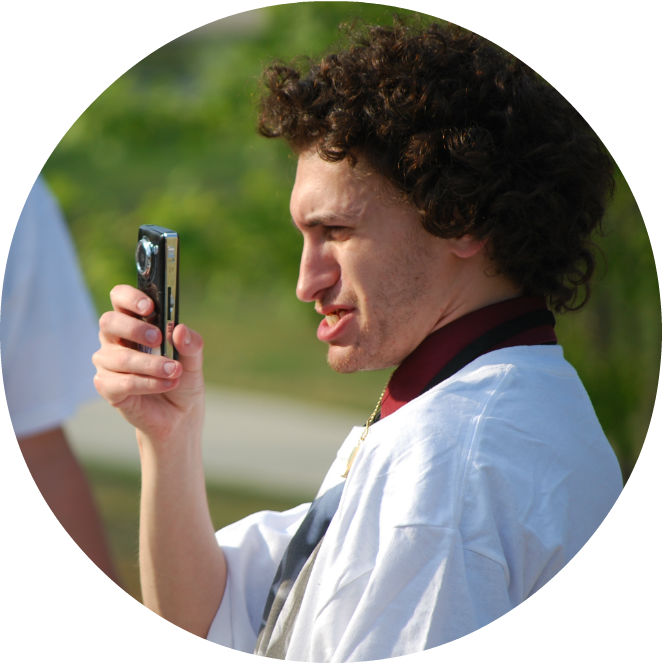
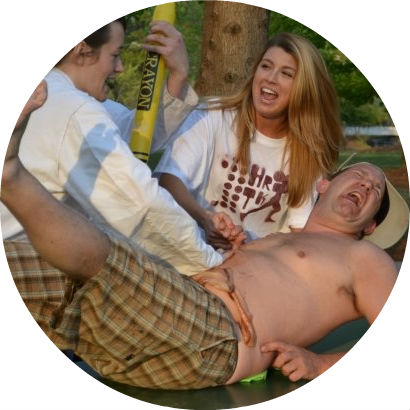
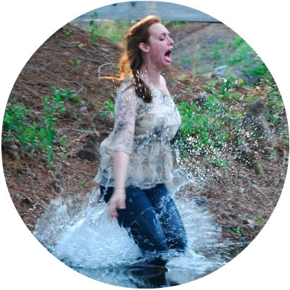
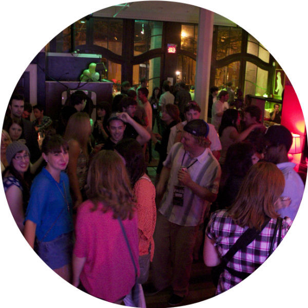
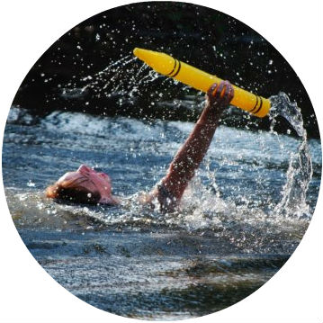

| HOME | FESTIVAL | CONFERENCE | SUBMIT | SPONSORS | ATTEND |
1Hour/1Take Video Race
The 2013 1Hour/1Take Video Race will begin at the Lumina Theater at the University of North Carolina Wilmington on Friday, April 5th. A prop or prompt will be assigned at check-in. All videos that make it in by the one hour deadline will be screened to our festival audience and compete for the Audience Choice Award. Winners will be announced at the Visions After Party.|  |
 |
||
| Open to anyone with a passion for film, 1Hour:1Take is an exciting way to connect and collaborate with other film students and film enthusiasts. |  |
||
 |
Participants work
in small crews for one
hour to create
minute-long videos shot as one long take – each one competing for the
coveted Audience Choice Award and the bragging rights that come with
it. Winning teams are announced at the
legendary After Party. |
||
|  |
 |
At the end of the day, not only will you walk away with a new network of filmmakers, but also with a festival-screened video. | |
| Now that's a win-win situation. | |||
REGISTRATION IS FREE
There are no fees to participate in the video race. Simply fill out the registration form to the right and we'll email you details of your registration when registration closes.RULES
• Completed videos must be no longer than one (1) minute in duration.• Participants have one hour to choreograph, shoot and export their video.
• Your video must be orchestrated in one long take. You can shoot as many of those takes as you want, but there is no editing multiple shots or takes together. Your video goes straight from your camera to the screen.
• A prop will be given to you and your team when you check in at the beginning of the day.
• Only videos that make it to the finish line at the end of the hour will be screened and can compete for awards.
• Those registering within the undergraduate deadline must show a current student ID upon check-in.
CREWS
All registered video racers will work in crews of at least four. Crews will be formed during the festival earlier that day, and will include one of our featured filmmaker or presenters. Between check-in and the video race shooting period, crew members will decide amongst themselves their positions and plan of attack.SCREENING
Videos will be screened as H.264 Quicktime files.Any questions? Shoot our Video Race Coordinator Marge Streb an e-mail at events@visionsfilm.org.
| 1hr/1tk
video race |
| About the Race |
| Register
Online |
| visions
screening tour |
| Schedule & Lineup |
| Join the Tour |
| the
after party |
| Details &
Venue |
| ABOUT |
FESTIVAL |
CONFERENCE |
SUBMIT |
EVENTS |
ATTEND |
SPONSORS |
PRESS |
| Mission The Awards Meet the Staff FAQ Contact Us |
2013 Film Selections 2013 Filmmakers Archives 2012 |
2013 Paper Selections 2013 Scholars Archives 2012 |
Overview Forms & Guidelines |
1Hr:1Tk Video Race Screening Tour The After Party |
Event Schedule Reserve Passes Parking & Venues Travel & Lodging |
2013 Sponsors Become a Sponsor |
In the News Visions PR |